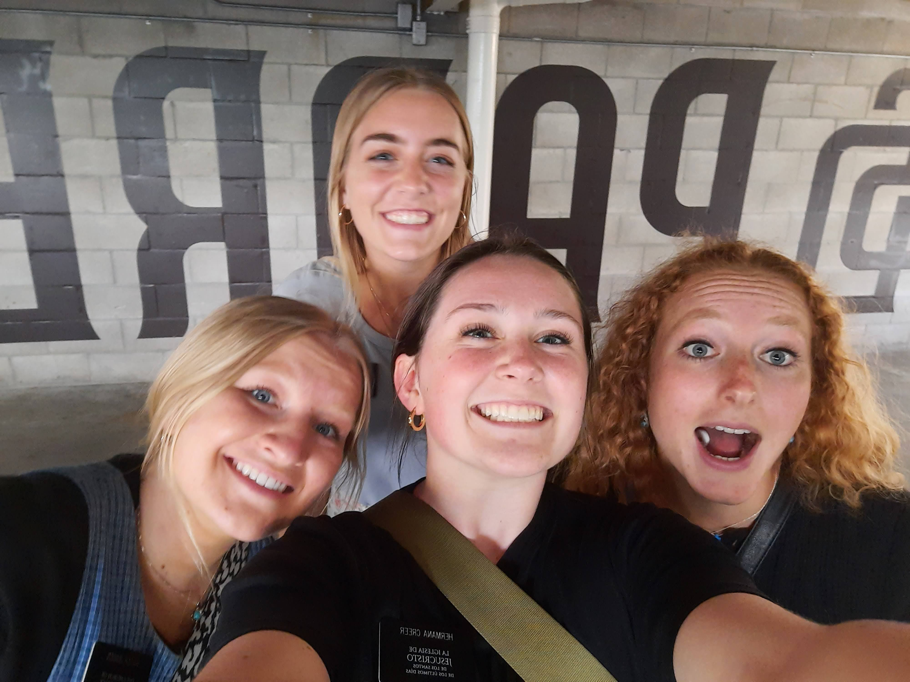

Thank you for taking the time to look over my resume! Aside from all of the formalitlies, I wanted to create a space where you could understand my "why." I hope as you better get to know me, we can connect over the things that really matter!
My Why
A resume does a good job of telling a aprt of the story, but here, I want to explain why I want to work for your company! I believe in working together to create a better world for the people around us. It may seem contrary to a consulting position, but I want to work to bring more efficient and effective solutions to the workspace. I hope this experience will give me an opportunity to be involved with the community and important matters. Here's me in my happy place: with people, serving, and loving!
A Few of My Passions:
- Creating meaningful relationships
- Hearing stories from around the world has changed my perspective tenfolds!
- The very most important thing in my life is the people in it.
- Learning all that I can
- Beyond the firmal classroom setting, I love to read, stay informed, and ask questions!
- Documenting what makes people them
- I've always dreamed of a way to ask complete strangers for a list of 3 things that make them smile, then recording it in a way that the world can view their answers too!
Some of My Inspiration!
Hoping to add more connection into the world of consulting!
Another Interest!
Ever since I can remember, I have loved understanding why people make decisions. As I've gotten older, I've began to really dive into studying politics, relationships, and psychology. Here's a graph that shows a little of what I've come to know!